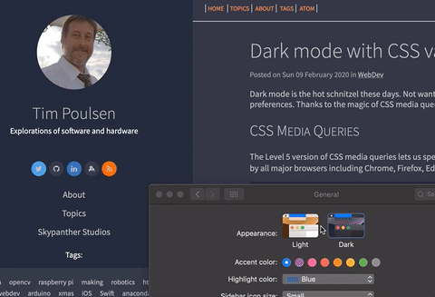

Dark mode with CSS variables
Posted on Sun 09 February 2020 in WebDev
Dark mode is the hot schnitzel these days. Not wanting to be left behind, I recently updated my site to use a dark or light mode depending on your operating system preferences. Thanks to the magic of CSS media queries and CSS custom properties (otherwise known as CSS variables) this turned out to be rather easy.
CSS Media Queries
The Level 5 version of CSS media queries lets us specify styles based on the user's color scheme preferences. According to CanIUse.com, this query type is supported by all major browsers including Chrome, Firefox, Edge, and Safari. Internet Explorer and some Linux browsers do not support it.
To use this media query, we'd add something like the following to our CSS file:
@media (prefers-color-scheme: light) {
/* light mode styles here */
}
@media (prefers-color-scheme: dark) {
/* dark mode styles here */
}
This is great ... except I don't want to duplicate all my CSS rules to specify both light and dark mode colors. Thankfully, we can use CSS variables to limit duplication.
CSS variables
If you're not familiar with CSS variables, I highly recommend you check out some of the great articles at CSS Tricks. In a nutshell, we can define variable values, then use those variables in our rules. We need to specify a scope (where the variable is valid) and prefix the variable name with two dashes, like this:
:root {
--link-color: rgba(24, 31, 50, 1);
--some-other-color: white;
}
In the code above, my variable names are link-color and some-other-color and the scope is root, meaning the entire web page. While I'm showing colors here, you can specify any valid CSS values, for example, strings like 'center' for text alignment, numeric values, or special CSS keywords (like color names). Once I've defined my variables, I can use them in a CSS rule elsewhere in the file like this:
a {
color: var(--link-color);
}
The var() syntax directs the CSS parser to use the variable's value — in this case for the text color of a link. Check out the CSS Tricks site I linked to above. You can do math on variables, use them in animations, and a whole lot more.
Putting it all together
By using the media query, my site sets color variable values based on your preference for light or dark mode. My CSS rules use those variable values to set colors for the elements on the site. Here's a snippet of my site's main.css file:
@media (prefers-color-scheme: light) {
:root {
--sidebar-bg: rgba(24, 31, 50, 1);
--sidebar-link: rgba(191, 192, 192, 1);
--article-fg: rgb(41, 45, 61);
--article-bg: rgba(228, 228, 228, 1);
--article-link: rgba(24, 31, 50, 1);
}
}
@media (prefers-color-scheme: dark) {
:root {
--sidebar-bg: rgba(24, 31, 50, 1);
--sidebar-link: rgba(191, 192, 192, 1);
--article-bg: rgb(41, 45, 61);
--article-fg: rgba(191, 192, 192, 1);
--article-link: rgba(191, 192, 192, 1);
}
}
And later in that CSS file, here are a couple of the rules I specify:
body, main, article {
background-color: var(--article-bg);
color: var(--article-fg);
}
aside.leftbar, div.leftbar {
background-color: var(--sidebar-bg) !important;
}
aside.leftbar a {
color: var(--sidebar-link);
}
a {
color: var(--article-link);
}
By far, the hardest part was figuring out the various classes used by Pelican, the static site generator I use. Oh, and choosing colors.
It's Alive!
I think the coolest part of this technique is that it's applied automatically. If you change your OS preference, your browser will automatically update the page.

There you have it, dark mode, CSS variables, and media queries. Powerful stuff!